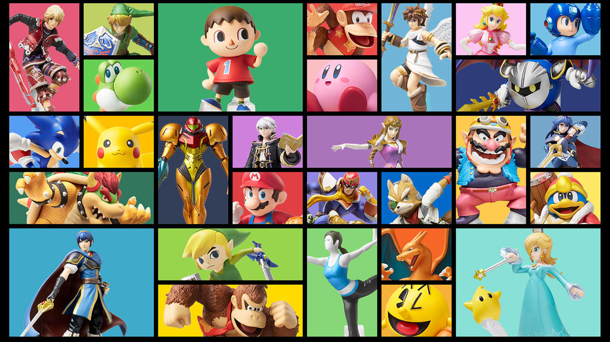

Amiibo is a toys-to-life platform created by Nintendo which was first introduced in November 2014. Amiibo figurines used various characters from Nintendo’s catalogue of games such as Mario, The Legend of Zelda, Kirby, and Animal Crossing. These figurines are similar in form and functionality to other toys-to-life platforms avaialble at the time such as Skylanders™, developed by Toys for Bob and published by Activision, Disney Infinity™, developed by Avalanche Software and published by Disney Interactive Studios, and Lego Dimensions™, developed by Traveller's Tales and published by Warner Bros. Interactive Entertainment. Amiibo was a direct response to this cultural phenomenon.Amiibo come in different shapes and sizes. You can find high-quality character figures or portable cards. To use them, you tap an amiibo to the right Joy-Con™ controller’s Right Stick on Nintendo Switch™, the NFC touchpoint on the Nintendo Switch Pro Controller, or the NFC reader on your Wii U™ GamePad controller. New Nintendo 2DS™ XL and New Nintendo 3DS™ XL systems have built-in amiibo support, and you can also use amiibo with Nintendo 3DS™ systems via the Nintendo 3DS NFC Reader/Writer accessory. There are various lines of amiibo figures such as the Super Smash Bros.™ Series, The Legend of Zelda™ Series, The Splatoon™ Series, The Pokémon™ Series, etc. There are even some amiibo with unique variants such as the Golden Mario amiibo that was released alongside Mario Party 10 on the Wii U in 2015. Amiibo often ran out of stock quickly, and some amiibo were only available at certain locations. For instance, the character Shulk, from Xenoblade Chronicles™, had an amiibo that was exlusivley available at GameStop in North America. The character Meta Knight, from the Kirby™ series also had an exclusive amiibo figure at Best Buy locations in North America. While many did buy amiibo for their use in games to earn various rewards like cosmetics for your Mii Character in Mario Kart™ 8, or to train your very own custom fighter in Super Smash Bros.™ for Wii U, many people simply bought amiibo for the novelty of having a figurine of your favorite Nintendo character. It was more about collecting than usage in games. This is part of why the popularity of amiibo started to fall.
